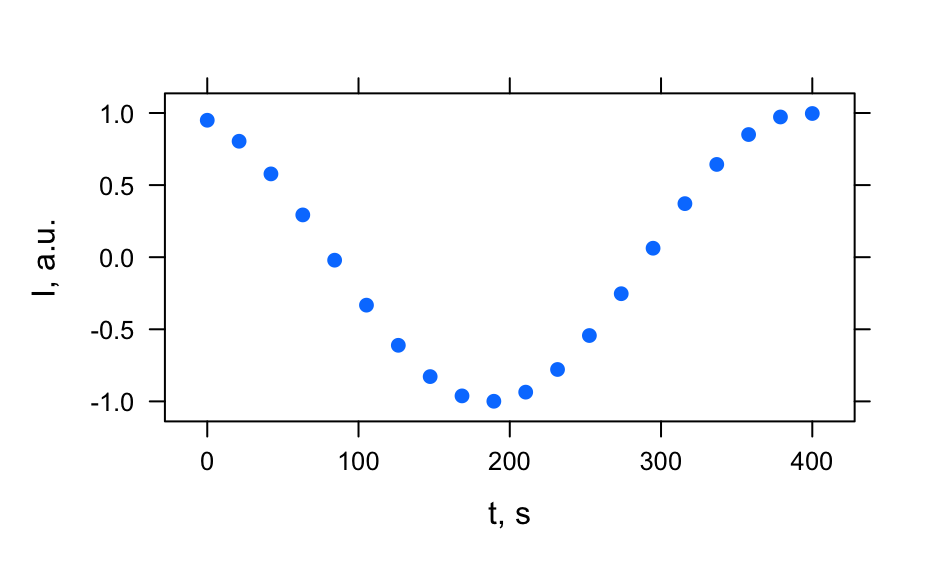
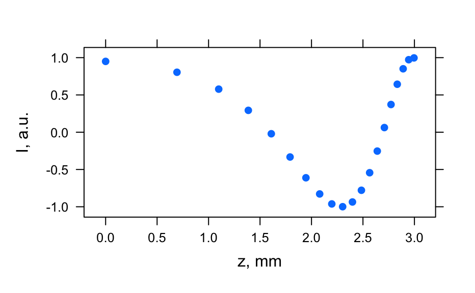
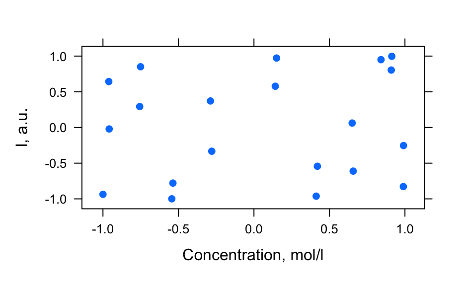
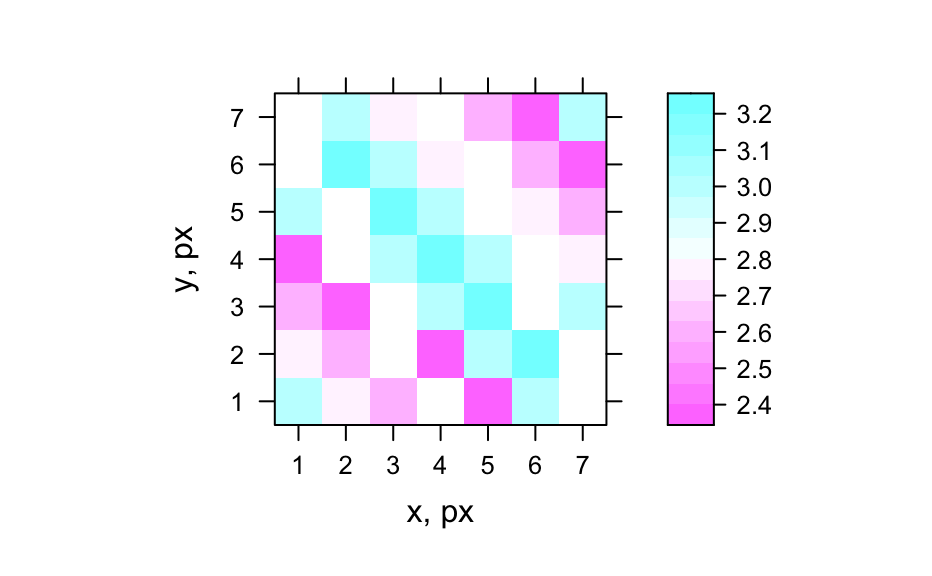
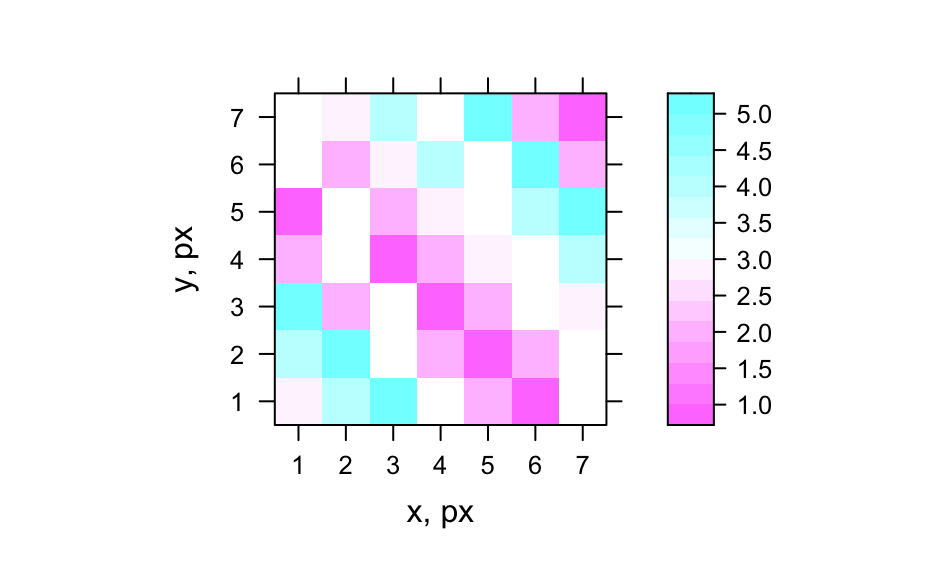

These functions generate hyper-spectral datasets that are mainly used for exploring and testing functionality of hyperSpec.
generate_hy_spectra() generates several spectra.
generate_hy_profile() generates depth, concentration, time-series
profiles at a single wavelength.
generate_hy_map() generates hyper-spectral map.
generate_hy_spectra(n_wl = 50, n = 20) generate_hy_profile(n = 20, wavelength = 550) generate_hy_map(n_wl = 5, n_xy = 7, k = 5)
| n_wl | (integer) Number of wavelengths (points per spectrum). |
|---|---|
| n | (integer) Number of spectra. |
| wavelength | (numeric) A single numeric value for |
| n_xy | (integer)number of pixels in x and y directions of hyper-spectral map. |
| k | integer not larger than |
A hyperSpec object.
V. Gegzna
# Generate spectra hy_spectra <- generate_hy_spectra() hy_spectra#> hyperSpec object #> 20 spectra #> 5 data columns #> 50 data points / spectrum# Generate profiles hy_profile <- generate_hy_profile() hy_profile#> hyperSpec object #> 20 spectra #> 4 data columns #> 1 data points / spectrum# Generate hyper-spectral map hy_map <- generate_hy_map() hy_map#> hyperSpec object #> 35 spectra #> 4 data columns #> 5 data points / spectrum#> Warning: device support for raster images unknown, ignoring 'raster=TRUE'#> Warning: device support for raster images unknown, ignoring 'raster=TRUE'